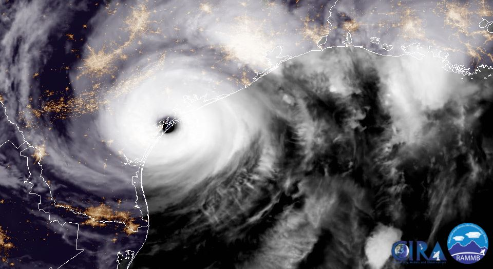

[Madison, WI/USA] - [May 5, 2020] - Bo Peng, as the Principal Investigator, has been awarded an AI for Earth research grant from Microsoft to help further the efforts in Geo-spatial Data Mining and Computing for Social Good.
This new grant will provide Bo Peng and his research advisor Prof. Qunying Huang at UW-Madison Geography Department with the Azure cloud computing resources to accelerate their work on self-supervised deep learning and computer vision for real-time large-scale high-definition (HD) change detection for flood extent mapping with multi-temporal very high resolution (VHR) satellite imagery.

Geocolor imagery of the 2017 Hurricane Harvey captured by the GOES-16 satellite. (Credits: NOAA, NASA)
AI for Earth is a $50 million, 5-year program that brings the full advantage of Microsoft technology to those working to solve global environmental challenges in the key focus areas of climate, agriculture, water and biodiversity. Through grants that provide access to cloud and AI tools, opportunities for education and training on AI and investments in innovative, scalable solutions, AI for Earth works to advance sustainability across the globe.
Learn more:
Microsoft AI for Earth program: https://www.microsoft.com/en-us/aiforearth.
Web stats: hits!
© 2020 Bo Peng. All Rights Reserved.